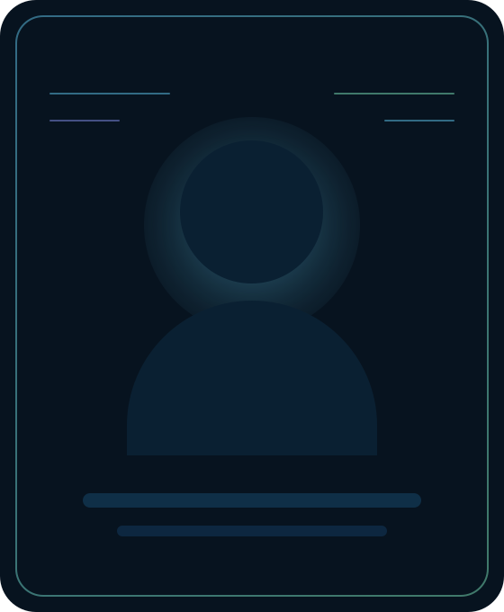
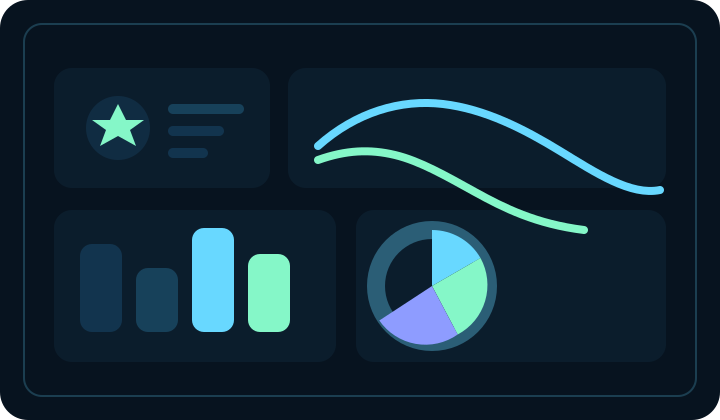
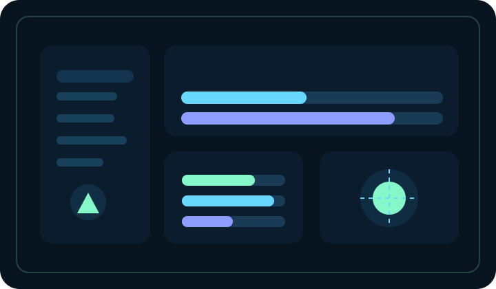

Featured project stories across security, AI, and full-stack work
Cyber Security Portfolio
Building threat-aware systems with a futuristic blue-team mindset.
I'm Prajwal P C, an MCA student focused on intrusion detection, network monitoring, anomaly analysis, and intelligent security dashboards. I like building security tools that feel sharp, visual, and useful instead of cold or difficult to read.
Threat Analytics
SOC Visuals
Detection Workflows
THREAT MAP
LIVE SIGNAL MODEL
role Entry-Level Cyber Security / SOC Analyst
focus Intrusion Detection, Threat Analytics, Log Patterns
education MCA at RV Institute Of Technology And Management
strength Security dashboards with practical ML-backed insights

Portfolio Persona
Builder of security-first interfaces
Focused on turning alerts, patterns, and risk indicators into readable systems.
Practical cyber concepts from monitoring to attack visualization
Public GitHub repositories already online and ready to explore
About Me
I enjoy making complex systems feel visible, understandable, and actionable.
My strongest interests are cyber security, anomaly detection, and dashboard-driven problem solving. I’m especially drawn to systems that watch for unusual behavior, surface it clearly, and help people react faster.
Build + Explain + Visualize
I like projects where there is both a technical core and a human-facing layer. That means not only detecting a threat or training a model, but also presenting the result with dashboards, timelines, reports, and better decision signals.
Cyber Security, SOC, and Security Engineering Roles
I’m currently looking for opportunities where I can contribute to monitoring, alerting, threat analysis, defensive tooling, and security-focused product building while continuing to grow in practical blue-team workflows.
Featured Projects
Projects designed around live signals, clear interfaces, and practical outcomes.

Threat Analytics
PhishScope AI
A phishing prediction platform with a custom web interface, CSV scoring workflows, and a three-stage risk classifier for low, medium, and high threat predictions.
- Built with Python, Flask, scikit-learn, and a custom browser UI
- Supports manual scoring, CSV uploads, metrics downloads, and prediction exports
- Designed to make security predictions easier to inspect and communicate
Web UI
CSV Scoring
ML Risk Stages

SOC Dashboard
Inside Threat Detection System
An internal threat monitoring concept that combines system scanning, integrity checks, SIEM-style event data, and report generation into a security-focused dashboard.
- Uses Flask, monitoring modules, report export flows, and risk-focused presentation
- Built around system behavior visibility, event tracking, and analyst-style outputs
- Reflects your resume direction toward real-time defensive monitoring
System Scan
Risk Reports
Threat Visibility
AI Interface
InnerOS
An emotional companion app centered on text-based mood detection, real-time visualization, and supportive AI-guided interactions.
- Integrated TensorFlow.js for mood prediction
- Included affirmations and conversational support
Full Stack System
Car Showroom Management System
A management platform for inventory, customers, invoices, and sales records with workflow improvements through structured data handling.
- Secure login, search, and invoice-oriented operations
- Improved organization with database-backed records
Skill Matrix
Security-first strengths with a builder's eye for detail.
Core Areas
Network Security
Traffic Analysis
Intrusion Detection
Anomaly Detection
Threat Analysis
Incident Monitoring
Log Pattern Detection
Secure System Design
Blue Team Mindset
Threat Dashboards
Tools & Technologies
Languages
Python, JavaScript, HTML, CSS
Frameworks
Flask, TensorFlow.js
Libraries
scikit-learn, NumPy, Chart.js
Concepts
IDS concepts, VPN security concepts, attack visualization, analytics dashboards
Education Journey
Academic growth shaped by computing, security curiosity, and hands-on project work.
Master of Computer Application (MCA)
RV Institute Of Technology And Management, Bengaluru | VTU
71%Bachelor of Computer Applications (BCA)
MGM Degree College, Kushal Nagar | Mangalore University
72%Pre-University (PCMC - Computer Science)
Sri Rama PU College, Mangalore | KSEEB
64.33%Class 10 (CBSE)
The Indian School, Isa Town, Bahrain
70%Currently Learning
Growing deeper in monitoring, detection, and security operations.
I want this portfolio to show momentum as much as past work, so this section highlights where I’m actively sharpening my direction.
What I’m actively improving
- Security monitoring workflows and alert reasoning
- Threat analytics dashboards and better event storytelling
- Cleaner engineering practices for deployment-ready projects
Where I want to contribute next
Entry-level cyber security, SOC analyst, security engineering, or software roles where I can contribute to monitoring, detection, visualization, and practical product building.
Why Me
I like systems that sense risk early and present it clearly.
My work sits at the intersection of cyber security, anomaly detection, and clean front-end storytelling. I'm especially interested in SOC workflows, intelligent alerting, and building tools that help people understand security events faster.
Contact
Let's build something sharp, secure, and memorable.
If you're looking for someone who enjoys cyber security, thoughtful interfaces, and practical project execution, I'd love to connect.